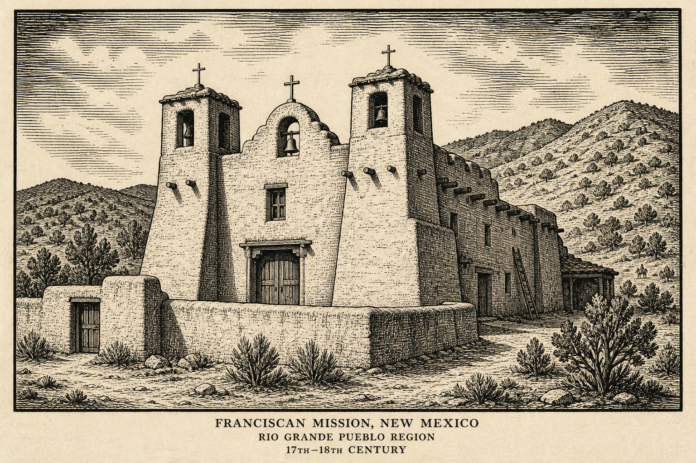
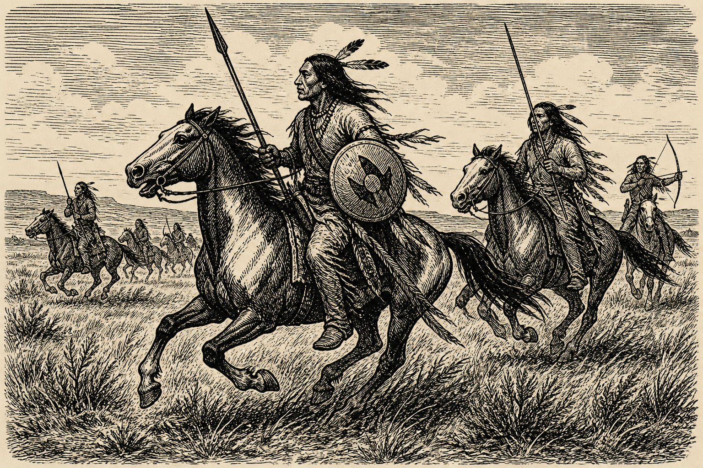
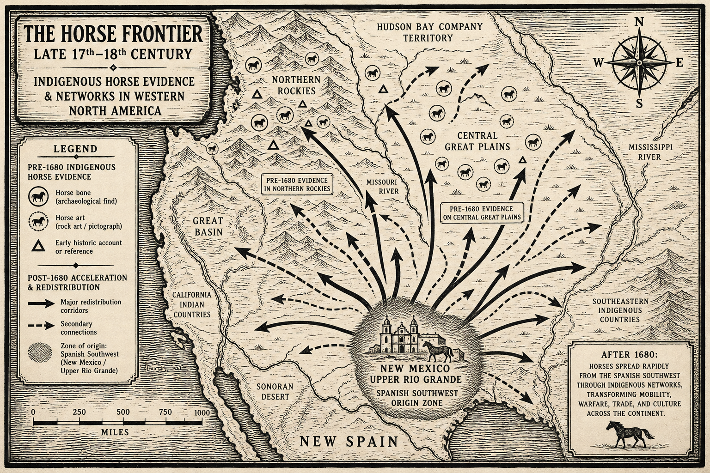

The Pueblo Revolt • Sovereignty, Sacred Authority & Colonial Defeat • New Mexico, 1675–1692
Five Years Later, a Thousand Miles West
Last time: Metacom’s War brought New England to the edge of destruction —
and left colonists afraid of what the war had made them.
Now cross the continent. Different empire, different religion, different peoples —
and autonomous Pueblo nations coordinating against a colonial order they found intolerable.
A Mission in Crisis
Franciscan zeal slackening; priests refuse to learn Pueblo languages
Missionaries whip and shackle Pueblos for “infractions”
Drought settles in — as Apache and Navajo raids intensify
80,000 → 17,000
Pueblo population, 1598 to 1679

Adobe mission, Rio Grande region — modern woodcut; structure type often postdates 1680
Sacred Authority in Crisis
Drought, disease, raiding, forced labor, and religious persecution undermined
Spanish claims to sacred authority.
For diverse Pueblo communities, ceremonial autonomy became inseparable from
political survival.
The Whipping of the Medicine Men
47 whipped
Pueblo medicine men, 1675 — charged with sorcery
3 hanged
a fourth took his own life
Among the whipped: Po’pay, of San Juan Pueblo — present-day
Ohkay Owingeh. The punishment became a major catalyst and symbol for resistance.
Why the Charge Was “Sorcery”
The Spanish weren’t prosecuting a labor dispute or a land claim.
They prosecuted Pueblo religious practice itself as a demonic crime.
The charge reveals the Spanish theological frame:
diverse Pueblo ceremonial traditions were recast as one demonic conspiracy.
✍ Write One Sentence
The Spanish charge was specifically sorcery — not rebellion, not labor refusal.
What does that specific charge tell you about what the Spanish thought was really at stake?
1–2 minutes · a few read aloud
August 1680
~200
of ~1,000 Spaniards killed
21 of 40
priests killed
Every
Spanish structure raided or destroyed
Villages separated by huge distances struck in coordination — not a spontaneous riot.
“Now the God of the Spaniards, who was their father, is dead, and Santa Maria,
who was their mother, and the saints, who were pieces of rotten wood —
[but] the Pueblos’ own god, whom they obeyed, [had] never died.”
— Declaration recorded in a Spanish interrogation, 1680 (Hackett, ed., 1942)
The churches burned. Spanish survivors fled Santa Fe down the Rio Grande to El Paso.
12 years
with no Spanish colonial government anywhere in New Mexico.
The most successful Indigenous revolt in North American history.
Victory did not create one Pueblo future
After 1680, autonomous Pueblo communities disagreed over leadership, diplomacy, religion,
crops, and family life. Po’pay’s influence declined as local priorities reasserted themselves.
Shared victory did not erase distinct Pueblo political or ceremonial traditions.
(Full reconquest story → Independent Study)
Stop. How Do We Know Any of This?
The Problem With the Record
Much of the surviving written evidence about why Pueblo people revolted comes from
declarations extracted from captives by
the Spanish authorities the revolt had just defeated.
Other archives: oral traditions • archaeology • architecture • ceramics •
rock art • landscape • Native scholarship
Josephe. Lucas. Pedro Naranjo. Three names. Three interrogations.
Whose Words Are These, Really?
Be cautious
Naranjo describes demons that “emit fire” — Pueblo belief, translator’s choice, or Spanish theology hearing what it expected?
Answers shaped by interrogators looking for a “diabolical” conspiracy
But not worthless
A positive vision survives: abundant harvests, health, a world free of Franciscans
Lucas admits he knows only fragments — not what a coached confession invents
✍ Quick Write
These declarations were given under interrogation by the side that just lost the war.
In one sentence: what should that make you more cautious about — and what can you still trust?
1–2 minutes
Horses Before and After 1680
Indigenous peoples had incorporated horses across western North America
before the Pueblo Revolt.
By the early 1600s: horses in Indigenous contexts on the Great Plains and northern Rockies
After 1680: Spain’s expulsion redistributed animals and may have accelerated existing Native networks

Later mounted scene — modern woodcut; not the origin of Indigenous horse cultures
✍ Predict
Native communities were already acquiring, breeding, trading, and integrating horses before 1680. Spain’s expulsion then redistributed more animals.
In one sentence: how does this correction change who appears to drive the history of horse cultures?
1–2 minutes
One Province. Existing Native Networks.
The Pueblo Revolt did not originate Indigenous horse cultures. It redistributed animals and may have
accelerated Native-controlled networks already extending across the West.
The Throughline
Indian power set the terms.
The Fear Doesn’t End
We’ve seen religious persecution, environmental crisis, and colonial fear help produce war in New Mexico —
and total war in New England.
Next: what happens when that fear stops pointing outward at an enemy —
and turns inward, on a colony’s own neighbors.
1692: negotiated submissions and Spanish claims of return
1693: violent retaking of Santa Fe; executions and enslavement
1694–96: organized resistance continues; revolt again in 1696
Rule returned, but not unchanged
Pueblo resistance had exposed the limits of the earlier mission regime.
Accommodation and coercion now existed together.
Reading Naranjo, Line by Line
Pedro Naranjo’s declaration describes three supernatural figures who gave Po’pay his orders,
emitting fire from their bodies, speaking of a return to “the state of their antiquity.”
Two readings at once
Which phrases sound like Pueblo testimony — and which sound like a Spanish interrogator’s
theology, hearing a “devil” wherever it already expected to find one?
Mapping Horse Networks Before and After 1680
Begin before the revolt: trace evidence for Indigenous horse use from the Southwest to the
central Plains and northern Rockies by the early 1600s. Then examine how 1680 may have
redistributed animals and accelerated existing networks.
(The full story of the mounted Plains empires is its own Topic Spotlight — coming separately.)

Continuity and acceleration — modern woodcut map, not a single-point origin story
⌨
×
Keyboard Shortcuts
→ / Space: Next | ←: Previous | S: Notes | F: Fullscreen | O: Overview | ESC: Close popup
×
Coordinated Uprising
The 1680 revolt was planned across Pueblo communities separated by considerable distance, striking in a synchronized way rather than erupting village by village.
This coordination matters because it refutes any picture of the revolt as a spontaneous riot. Tradition holds that runners carried knotted cords to mark the days remaining until the uprising — a deliberate regional act of political organization among autonomous Pueblo nations and communities.
×
Pedro Naranjo
A member of the Queres nation whose lengthy declaration, given under Spanish interrogation, is one of the most detailed surviving accounts of the revolt’s organization and religious vision.
His declaration is invaluable and deeply compromised at the same time: it preserves real detail about the uprising, but it was extracted by the defeated Spanish authorities, filtered through translation, and shaped by interrogators listening for confirmation of a “diabolical” conspiracy. It must be read as a negotiation between two parties, not as transparent testimony.